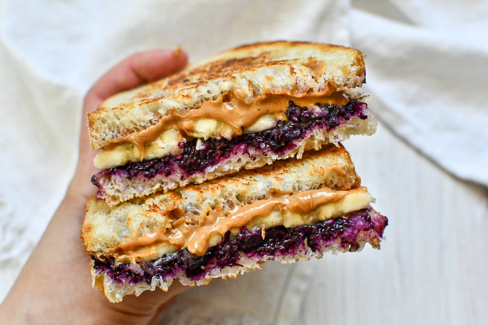
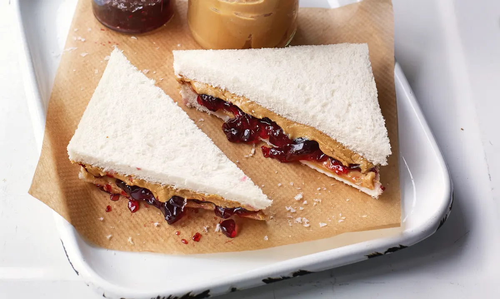
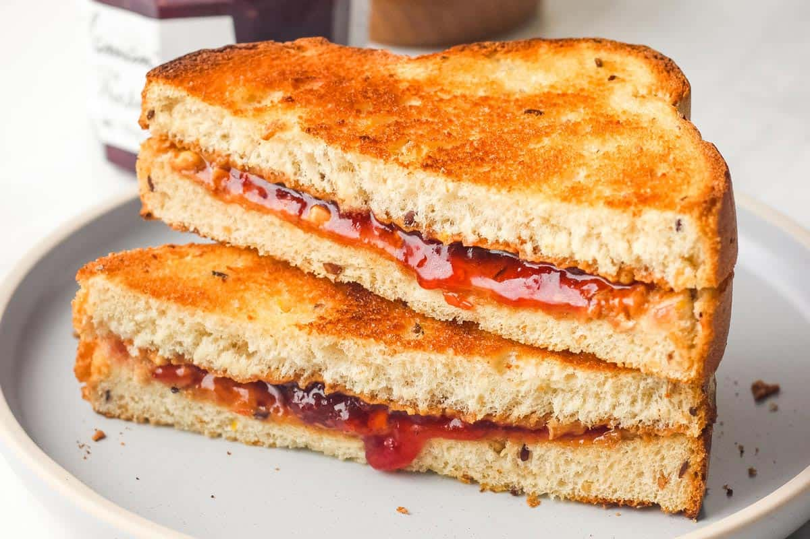
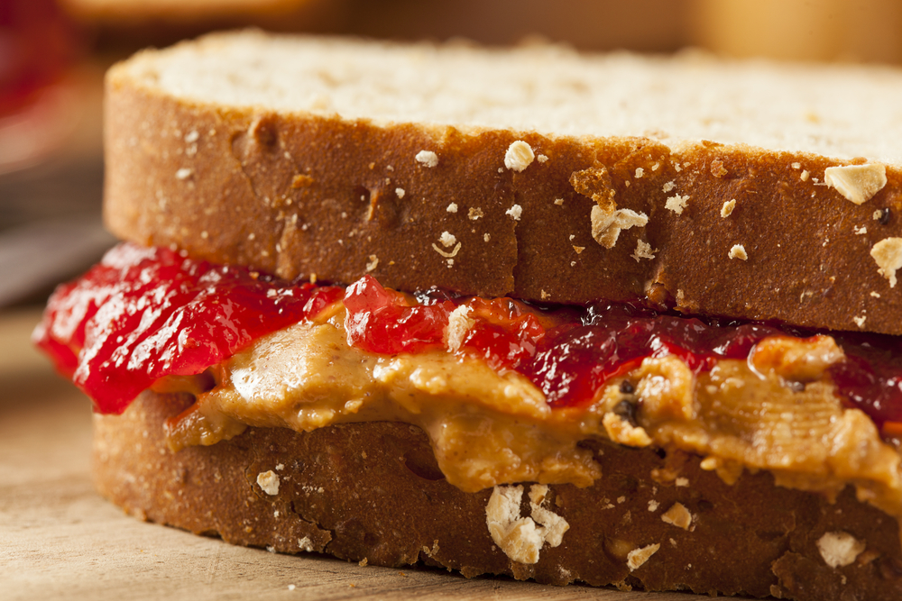

The legend has been passed down by NBA generations, chronicled like a Homeric odyssey. The tale they tell is of Kevin Garnett and the 2007-08 Celtics, and the seminal moment of a revolution. Bryan Doo, Celtics strength and conditioning coach, recalls it as if it were yesterday, how before a game in December of that season, an unnamed Celtic -- his identity lost to history, like the other horsemen on Paul Revere's midnight ride -- complained to Doo of incipient hunger pangs.
"Man, I could go for a PB&J," the player said.
And then Garnett, in an act with historical reverberations, uttered the now-fabled words: "Yeah, let's get on that."
Garnett had not, to that point, made the PB&J a part of his pregame routine. But on that night in Boston, as Doo recalls, Garnett partook, then played ... and played well. Afterward, from his perch as the Celtics' fiery leader, Garnett issued the following commandment: "We're going to need PB&J in here every game now."
And so a sandwich revolution was born.
At the time, Doo notes, the Celtics not only didn't provide lavish pregame spreads, they didn't offer much food at all. But he soon found himself slapping together 20 PB&J's about three hours before every tip-off, the finished products placed in bags and labeled with Sharpie in a secret code: "S" for strawberry, "G" for grape, "C" for crunchy. Of vital import: Garnett was an "S" man, and woe unto he who did not deliver him two S's before every game. "If Kevin didn't get his routine down, he'd be pissed," Doo says. "Even if he didn't eat them, he needed them to be there."
From Doo's perspective, PB&J's were a far better option than players seeking out, say, greasy junk food from arena concessions. "It was a win-win for everybody," he says. But as the Garnett-Paul Pierce-Ray Allen Celtics steamrolled to a 66-win season and an NBA title, the secret to their success, so cleverly disguised between two pieces of white bread, was eventually leaked. "Boston was doing it at a mass-produced level earlier on than I noticed other people doing it, for sure," says Tim DiFrancesco, the Lakers' strength and conditioning coach since 2011. "They were really on the forefront of this revolution." In time, as visiting teams swung through Boston, opposing players caught wind that a new day had dawned. DiFrancesco recalls hearing from his troops during a visit: "Wait a minute, there's PB&J's in the Celtics' locker room? Can we get some?" Doo's colleagues around the league were less effusive. "B-Doo, I can't believe you did this for the guys," one told him. "Now you got me making them."
There was no putting the jelly back in the jar. Over the course of the following seasons, as that Celtics championship run ran its course, the pieces of that team would be spread far and wide: Pierce and Garnett migrating the PB&J down I-95 to Brooklyn; Glen "Big Baby" Davis converting the Orlando Magic; Tony Allen spreading the bug to Memphis; coach Doc Rivers bringing it across the country to the Clippers.
And nothing would ever be the same.
THE TRAIL BLAZERS offer 20 crustless, halved PB&J's pregame -- 10 of them toasted, a mandate ever since an opposing arena prepared them as such and Blazers guard Damian Lillard approved. They're composed of organic fixings, save for white bread, which Portland's assistant performance coach Ben Kenyon notes is a high-glycemic carb that easily digests to provide a quick energy jolt. Typically, all 20 vanish well before tip-off; sometimes the Blazers double their order.
The Rockets make sure the PB&J is available in their kitchen at all times, in all varieties -- white and wheat bread, toasted, untoasted, Smucker's strawberry and grape, Jif creamy and chunky -- and offer 12 to 15 sandwiches pregame, with PB&J reinforcements provided at halftime and on postgame flights.
The secretive Spurs, it has been confirmed, indulge in their own pregame PB&J's. The Clippers, at home and on the road, go through two loaves of bread, almond and peanut butters, and assorted jellies from Whole Foods. The Pelicans offer PB&J everywhere: hotel rooms, flights, locker rooms. The Wizards had some "minor uprisings" from players, one source says, when management tried to upgrade team PB&J's with organic peanut butter on whole grain bread -- but peace was restored when each side compromised to include all options.
The Bucks might boast the NBA's most elaborate PB&J operation: a pregame buffet featuring smooth, crunchy and almond butters, an assortment of jellies (raspberry, strawberry, grape, blueberry, apricot), three breads from a local bakery (white, wheat and gluten-free) and Nutella. The team scarfs 20 to 30 PB&J's per game and travels with the ingredients, which rookies prepare on the plane and in visiting locker rooms. They've even offered their players PB&J-flavored oatmeal, PB&J recovery shakes, PB&J waffles and PB&J pancakes. Bucks team chef/dietitian Shawn Zell won't rule out one day making a PB&J burger.
It's a tale of two diets in Cleveland's Quicken Loans Arena, where the Cavs, courtesy of a partnership with fellow Ohio-based outfit Smucker's, foist about a dozen of the company's prepackaged Uncrustables PB&J's on opposing teams every game night. (Both the Lakers' and Celtics' strength and conditioning coaches tell their players to avoid those processed, once-frozen snacks.) But the Cavs fare far better with their fare, serving themselves 20 artisanal PB&J's prior to tip-off, with homemade grape and raspberry jelly, as well as almond butter-and-banana and peanut butter-and-banana sandwiches -- the power of the PB&J being wielded as a form of asymmetric nutritional warfare.
No matter how you slice it, it's hard to swallow: The NBA is covered in experts, obsessed with peak performance -- and still this pillar of grade-school cafeteria lunches is the staple snack of the league. An exorbitantly wealthy microclique, backed by an army of personal chefs, swears by a sandwich whose standard ingredients boast a street value of roughly 69 cents.
IT WAS WINTER of 2013 and those in Dwight Howard's inner orbit begged the All-Star center to kick his addiction, but he denied he had one. Why, he'd dominated for years as the NBA's best big man, carrying the Magic to the Finals in 2009. Then came surgery on a herniated disk in April 2012, followed by an August trade to the Lakers, who had paraded him around like their next Wilt, Kareem or Shaq -- an unstoppable center who would deliver titles in droves. But his back just wasn't healing. Howard was 27, sculpted like a statue in the Louvre, but he labored down the court like a retired fullback. The Lakers plummeted below .500 in January, with Kobe Bryant barking at Howard to man up, though in terms a tad more colorful. But the team's chef and its strength and conditioning coach stressed a different message: "Man up -- and get off this sugar."
By February's All-Star break, it was time for a full-blown intervention, and Dr. Cate Shanahan, the Lakers' nutritionist, led the charge, speaking to Howard by phone from her office in Napa, California. Howard's legs tingled, he complained, but she noticed he was having trouble catching passes too, as if his hands were wrapped in oven mitts. Well, he quietly admitted, his fingers also tingled. Shanahan, with two decades of experience in the field, knew Howard possessed a legendary sweet tooth, and she suspected his consumption of sugar was causing a nerve dysfunction called dysesthesia, which she'd seen in patients with prediabetes. She urged him to cut back on sugar for two weeks. If that didn't help, she said, she vowed to resign.
To alter Howard's diet, though, Shanahan first had to understand it. After calls with his bodyguard, chef and a personal assistant, she uncovered a startling fact: Howard had been scarfing down about two dozen chocolate bars' worth of sugar every single day for years, possibly as long as a decade. "You name it, he ate it," she says. Skittles, Starbursts, Rolos, Snickers, Mars bars, Twizzlers, Almond Joys, Kit Kats and oh, how he loved Reese's Pieces. He'd eat them before lunch, after lunch, before dinner, after dinner, and like any junkie, he had stashes all over -- in his kitchen, his bedroom, his car, a fix always within reach. She told his assistants to empty his house, and they hauled out his monstrous candy stash in boxes -- yes, boxes, plural. Howard ultimately vowed to go clean all at once, but before he committed to cutting the junk in his diet, he asked Shanahan one question. It was about one food he wasn't willing to surrender, one snack at which he had to draw the line.
He wanted to know whether he could still eat peanut butter and jelly sandwiches.
DiFrancesco was hardly surprised. When he'd joined the Lakers in 2011 and begun traveling around the league, he'd already seen it: Four years after KG's PB&J epiphany, virtually every player's lounge and practice site was stocked with jumbo-sized jars of peanut butter and jelly, bookended by a loaf or two of bread. DiFrancesco had had his eye on improving player diets, but Mount PB&J was clearly not the hill to die upon. "You pick your battles," he says.
Which is exactly what DiFrancesco told Shanahan as they began working with Howard, in 2013, to overhaul his sugary diet. Their demands weren't onerous: He didn't have to quit cold turkey, they only wanted Howard to try a healthier approach, with soft sourdough, organic peanut butter and low-sugar jelly. Tensions were high when they presented Howard with the healthier version. But as he sank his teeth in, Howard grinned, "Yeah, this will work." Howard, as requested, cut out sugars from his diet. The tingling in his fingers and legs ceased. After the All-Star break, he tallied 1.8 more rebounds, 2.1 more points and 2.5 more minutes per game.
Today, Shanahan accepts what DiFrancesco realized years ago: "The peanut butter and jelly sandwich is absolutely never going to not be in the NBA. And I feel confident saying never."
BUT WHY? WHAT is it, exactly, about a PB&J?
In dozens of interviews with players, coaches, executives, nutritionists, trainers and others in and around the NBA, the most common explanation offered was the most obvious: PB&J is comfort food, and countless players, like countless other humans, grew up on it. "It's a soothing memory from childhood," Shanahan says. It's "peace of mind," says Brett Singer, a dietitian at the Memorial Hermann Ironman Sports Medicine Institute, who adds: "You feel good, you play well." Brian St. Pierre, director of performance nutrition at Precision Nutrition, who's consulted with the Spurs, says it's not so much a placebo effect but "almost more than that. They just simply believe." Lakers coach Luke Walton has a theory: NBA players are superstitious nuts, especially when it comes to routines. "Athletes are strange people," he says. "We've got weird habits." Walton, now 36 and in his first season leading the Lakers, still downs a PB&J before every game.
Factor in the NBA schedule -- teams flying constantly, red-eyes, bad traffic, rotten night's sleeps -- and on a night-to-night basis, so much is outside a player's control. It's all the more natural to cling all the tighter to something quick, cheap and all but impossible to foul up.
Cute theory. But now let's engage in a little evolutionary anthropology and travel back millennia to when humans began to walk upright and our ancestors developed cravings for certain qualities in hard-to-find calorie-dense foods: fats, sugars, starches, proteins and salts. Today, the smell of these -- even the mere awareness of their proximity -- still triggers a release in humans of the neurotransmitter dopamine, which once provided our ancestors with an energy boost for the hunt, along with serotonin, the "happiness hormone." At first bite of a PB&J, receptors detect the food's chemical composition and report back to the brain -- fats! sugars! starches! proteins! salts! -- where reward centers release opioids and, after a few minutes, endorphins, which briefly reduce stress. It's an effect, St. Pierre notes, that's similar to sex. They also lower the body's heart rate, a bonus for an anxious hunter or a player just before tip-off. "These are the exact same pathways that make heroin addicts chase their next fix," says Dr. Trevor Cottrell, director of human performance for the Memorial Hermann Ironman Sports Medicine Institute.
Heroin, sex ... peanut butter and jelly. You can see why players might revolt if someone tried to take away their PB&J. So are they actually good for you -- or good enough for the physical demands of the most physically taxed athletes on the planet? Perhaps you've seen articles in your Facebook feed about the horrors of sugar and carbs. Within that framework, no, PB&J's aren't great. The typical PB&J contains roughly 400 to 500 calories, 50 grams of carbohydrates, 20 grams of fat and 10 grams of protein. As Jill Lane, a Dallas-based sports nutritionist who has worked with NBA players, says: "It's not the best, but it's not bad."
But nutrition may be beside the point. "Even if we argue that physiologically a PB&J isn't the 'best' pregame meal," St. Pierre says, "that's only true if you think psychology doesn't impact physiology, and we know it does. Your thoughts about a food will actually help to shape how your body reacts to that food." As Stephan J. Guyenet, author of The Hungry Brain, notes, "The brain mostly cares about calories, so plain celery sticks and kale don't release much dopamine and we don't develop cravings for them." Or as Cottrell says: "The brain is a complex organ system that we know very little about. But what we know [about food cravings] alludes to some important neural pathways that are often associated with crack cocaine addiction, believe it or not."
Make that heroin, sex ... and crack cocaine.
THE MUTINOUS UNDERTONES for the Warriors appeared in October 2015, on the team's first flight of the season. In the prior offseason, the Warriors had hired Lachlan Penfold, former head of physical preparation for an Australian men's rugby squad, to man a newly created position: head of physical performance and sports medicine. Penfold arrived in the Bay Area with a simple vision: less sugar, healthier food. The Warriors, in turn, had willingly parted with candy, cookies and soda. But now, on this charter flight, they found nary a PB&J. Concerned glances were exchanged. "Just the fact that it wasn't there shook me a little bit," Stephen Curry told ESPN at the time. Clearly, Penfold had made a mistake, yes? No. "Sorry, mate," Penfold explained then. "We're not doing sugar." History records this sinister act as the first shot fired in the Great PB&J War of 2015.
"Athletes are strange people. We've got weird habits."
Luke Walton
Walton, at the time the interim coach for an injured Steve Kerr, decided to lead the revolt. Perhaps in an effort to ingratiate himself with his new charges, whenever Walton was asked by flight attendants in the coming weeks, "Coach, what can we get you?" he'd reply, without fail, in a voice loud enough that Penfold and his players could all hear, "Peanut butter and jelly!" Walton would be duly informed that no such option was available. But his message was clear. This would not stand. Said Penfold at the time: "I haven't heard [complaining] like that since my youngest daughter was about 3 years of age."
As the Warriors' PB&J ban persisted, Walton upped the stakes: He began telling flight attendants he wanted PB&J ... or nothing. Then on Dec. 11, after the Warriors beat the Celtics in double overtime to improve to an NBA-record 24-0, players again asked for PB&J for the flight to Milwaukee on the second night of a back-to-back. Again, Penfold said no. "Who needs peanut butter and jelly when you've got Vegemite?" Penfold joked at the time, referencing a famously distasteful Australian food spread. The following night, the Warriors lost to the Bucks. "I have to believe we lost a game because of it," Warriors GM Bob Myers said then, tongue firmly in cheek -- perhaps stuck to the roof of his mouth. "I think you can trace it to the peanut butter."
Finally, Walton called in the heavy artillery: Curry, the MVP guard. The sharpshooter had become a PB&J devotee during the 2014-15 season, when, during one halftime, Curry complained of hunger and the team's strength and conditioning coach whipped one up. From then on, Curry's PB&J (for the record: Smucker's strawberry, Skippy creamy) became his go-to pregame meal. "If you look at Steph's warm-up, some of it is sensical, some of it doesn't make sense," Myers said. "But if peanut butter and jelly are part of our routine, to take that away from him, it was actually an irresponsible thing to do from the outset." It was time for Walton to fire back: He explained to Curry that if the guard entered the fray, they'd win this war. "Once Steph got on board," Walton says, "we got them back pretty quickly after that."
Penfold relented: "A peanut butter and jelly sandwich every now and again wouldn't kill them. I wouldn't eat it, but you know, whatever turns you on, you know?"
"Catastrophe avoided," Myers said.
Today, Penfold is no longer employed by the Warriors. Last October it was reported that he'd joined the Melbourne Storm, an Australian rugby league team, as the new director of performance. No formal announcement ever appears to have been made explaining what led to his departure from the Warriors, after their 73-win season. One can assume it was not because of sandwiches. But last February, Walton was quoted by The Wall Street Journal, defending his battle and proclaiming victory for the common man over the forces of anti-PB&J tyranny: "You gotta fight for your rights. If you believe in something, you gotta fight for it."
In the aftermath, when Walton was named coach of the Lakers last summer, he was approached by DiFrancesco, who also helps shape the Lakers' pregame and postgame meals. DiFrancesco asked Walton whether there was any specific item that Walton wanted on the team plane after games.
"Nope, your call," Walton told him. "I'm sure you do a great job. But ... there better be PB&J's."
IT'S LATE JANUARY, midday, at a shared workspace along Sunset Boulevard in Hollywood, and NBA commissioner Adam Silver has a plane to catch. He's leaving a panel discussion at the second annual Total Health Forum, hosted by the league and its partner, health giant Kaiser Permanente, and there's a crowd waiting.
Silver, in a red tie and black suit, shakes a slew of hands, smiles for a few selfies and, as the minutes become precious, disappears through a doorway into the back. He removes a microphone affixed to his jacket, then meets a reporter, who warns Silver that what's coming next are serious questions for a serious story. Silver agrees to be grilled, and the two walk and talk. And then Silver is asked: What is the league's official stance on the very obvious peanut butter and jelly epidemic in NBA locker rooms?
"Our official stance," Silver says, "is that it is a healthy snack."
And then he stops. Clearly, Silver recognizes that this subject is not one to be discussed in passing. These questions must be given his full attention, even if he's on a tight schedule, with a plane to catch.
"Let's talk," he says.
In Golden State last year, the reporter notes, a sports scientist wanted to do away with the snack, sugars and all that -- and the players revolted. The players won. So you have the health community vs. the players. Whose side are you on? "Well, so where I fall is I listen to Chris Paul, our first speaker this morning," Silver says. "He talked about balance. So I'm an advocate of balance. So people need to eat nutritious meals, but a little bit of sugar ... OK."
But is allowing a little bit a slippery slope?
"No, because my response to any slippery slope is you draw lines."
Finally, the crucial query is broached: How do you take yours, Adam Silver? And where do you fall in the grape vs. strawberry debate?
"I'm clearly on the strawberry side of the debate," Silver says, with some measure of emphasis, as if selecting grape is indefensible. "And I take, usually, my peanut butter with toast in the morning. I've been going light on the jelly. I do peanut butter virtually every day. I don't always add the jelly."
GROWING UP IN Latvia, Knicks sensation Kristaps Porzingis had never heard of a PB&J. Then he joined the NBA. "I fell in love," he told The Wall Street Journal. Pacers nutritionist Lindsay Langford says rookie Georges Niang begs -- yes, begs -- for her PB&J recovery-shake recipe (frozen blueberries, vanilla whey protein, creamy peanut butter and milk), which she makes, once a week, to his delight. Warriors forward Kevin Durant is such a fan that he worked with Nike to unveil a PB&J-colored sneaker. His ex-teammate Russell Westbrook prefers a pregame marriage of Skippy and strawberry jelly between toasted wheat bread, halved sometimes, depending on his mood, with butter slathered on the inside.
Then there's Lakers 19-year-old rookie forward Brandon Ingram, who, before road games, carefully inspects his team's PB&J's, each made with organic ingredients, to make sure they're up to his standards. Ingram, a jelly-come-lately, says he began eating pregame PB&J's only about two years ago. But when he arrived in the NBA and found the habit leaguewide, he knew he'd found a home. "Brandon has the highest requisites," DiFrancesco says, "on what constitutes a perfect PB&J for any player I've ever come across."
Ingram, the No. 2 overall pick in the 2016 draft, self-identifies as a "big grape jelly lover" and demands a healthy spread of peanut butter on the inside of both slices of bread, and if he doesn't see jelly poking out on at least two sides of the sandwich, he's got serious concerns. Ask him to name a place where the PB&J was lacking and he doesn't hesitate. "Utah," he says. "Not enough jelly."
Brandon Ingram might not realize that he's inherited a legacy. He might not know that he's but one soldier in a decadelong war. But Celtics trainer Doo knows. He knows that the legend they speak of is real. He knows there is a Johnny Appleseed of the PB&J revolution.
And he knows where to find him.
And so it was that during a January visit to Atlanta, when Doo stopped by the TNT studios, he saw, as part of a skit for TNT's new Area 21 show, several NBA greats sitting together to dine: There was Shaquille O'Neal, feasting on barbecued chicken. There was Celtics guard Isaiah Thomas, enjoying a steak.
And Kevin Garnett? Well, come on, you know what was on his plate.